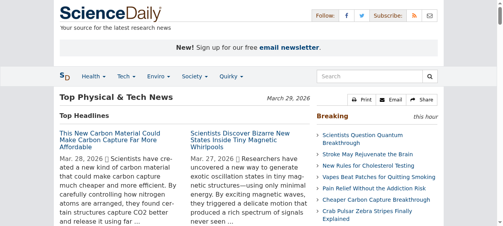

1. 芝麻粒大小的神經植入物：可追蹤並無線傳輸腦活動超過一年
Grain-of-Salt Neural Implant Tracks Brain Activity Wirelessly
科學家研發出一款極微小的神經植入物，體積小到可以放在芝麻粒上，卻能追蹤並無線傳輸腦活動超過一年。它由安全的雷射光供電，透過組織傳輸資料。這項突破可能徹底改變腦機介面的發展。
Scientists have developed an incredibly small neural implant, small enough to rest on a grain of salt, that can track and wirelessly transmit brain activity for over a year. Powered by safe laser light that passes through tissue, this breakthrough could revolutionize brain-computer interfaces.
ScienceDaily